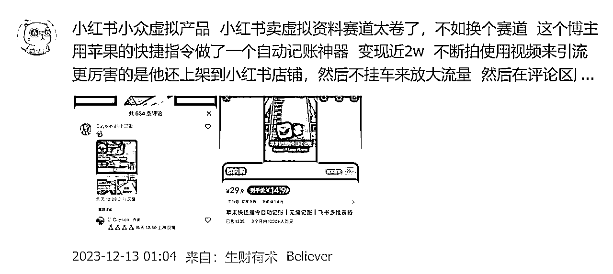
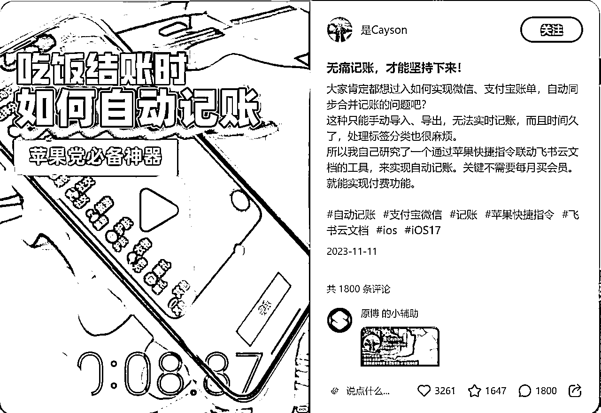
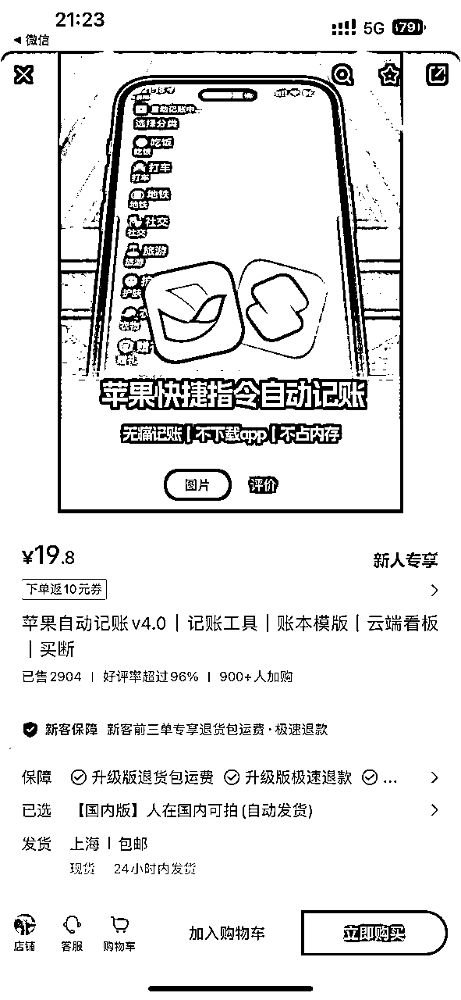
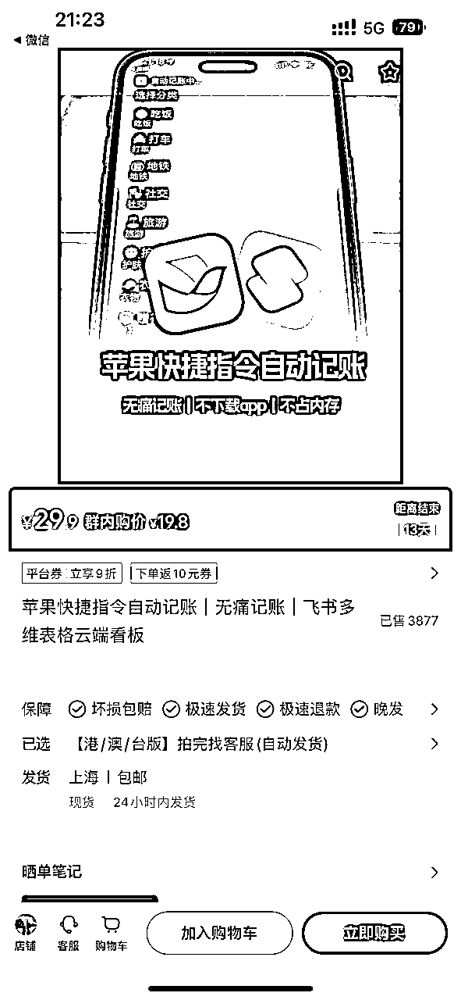
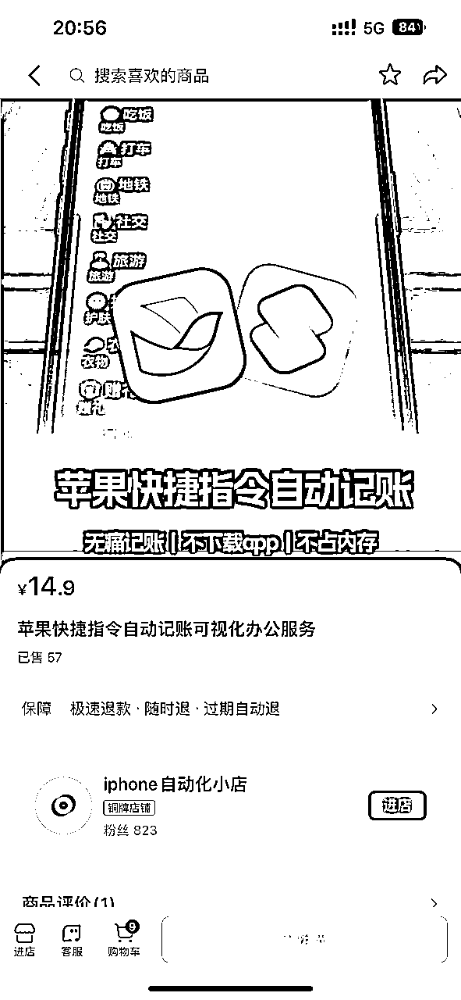
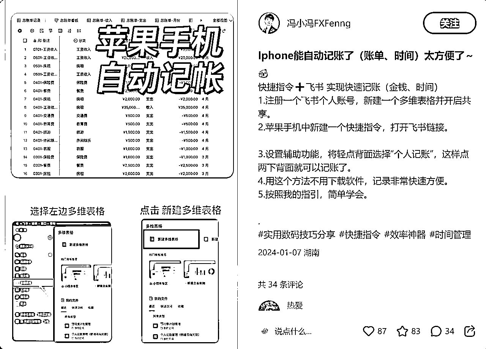
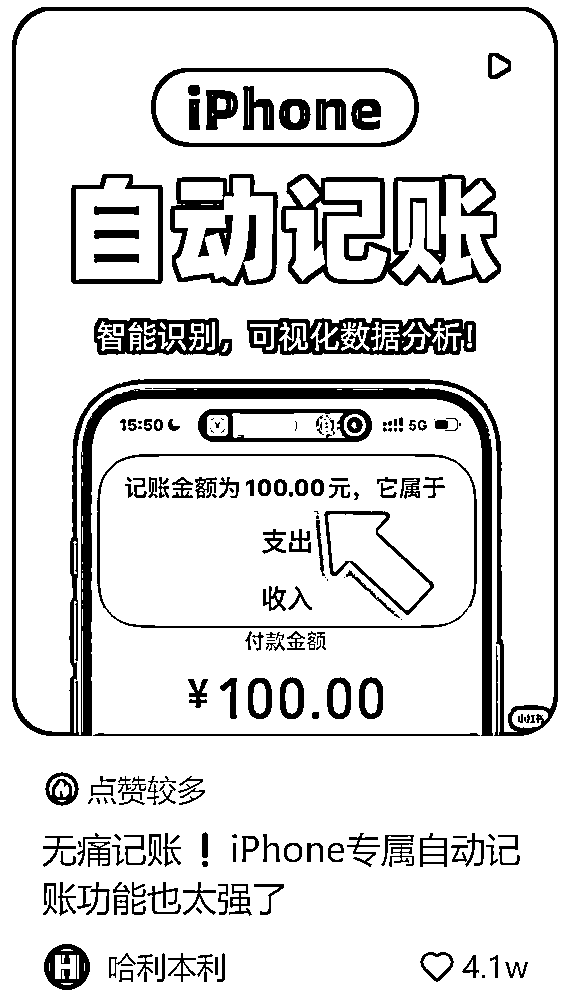

来源：https://v5848xh6xy.feishu.cn/docx/DFA9dsTVzoQPPsxnnCdcCvg8nuf
自动记账软件最早出现在星球的风向标里面是12.13号，圈友@believer 发出来的（感叹圈友眼光犀利，嗅觉敏锐）。这款软件最大的卖点是 偷懒（只需轻点背部两下）+无需下载安装,精准解决了客户需求，从无数个记账软件中脱颖而出。

这个软件之所以比较简单，是因为直接采用了苹果手机自带的快捷指令（选择的是轻点背面两下）+飞书多维表格（生财圈友应该都不陌生）。软件的具体操作是，手机付款之后，留在付款界面不动直接双击手机背面，软件自动识别金额，然后记账小弹窗弹出核对金额（或识别不到手动添加），点击完成，然后弹出记账类目，即可将该笔消费记录存档。另外，该软件还支持可视化，界面简洁好看，使用多维表格显示记录看板、消费频次词云等。
综合来说，该软件能够火出圈的最最主要的原因就是只需双击手机背面即可弹出记账软件，契合了人们又想记账又想偷懒的矛盾心理！！！因此，如果想走软件产品这条路的人，对于产品解决的痛点分析就非常重要了。尤其这个卖的人也是大厂产品经理，本身就具有丰富的实操经验，更懂用户心理！

跟这个自动记账软件思路相同的产品还有圈友之前发的批量删除微信好友软件，这款软件开发的初衷也是这位圈友手动删好友（一下午只能删除很少批量）删到很累，同时也咨询了其他人也具有相同的烦恼，如果有自动软件解决该需求有很大的购买意愿。因此，用户痛点有了（删除累到想骂娘）+用户需求（很少的钱解决愿意花钱买），所以市场就确定有了，软件开发出来之后就很快的有了市场，整个sop跑的很顺畅。
对比来说，这两款软件都是开发简单，但需求痛点很明确的产品！都是契合了买家想偷懒解决问题的思路！
先分析一下，这款软件的流量来源。
1、最主要的售卖平台--小红书
分析流量之前，先看看作者目前已经在小红书取得的成绩，19.8内购价售卖3877份，9.8的卖了2904份，从11月到现在不到4个月赚了10万块。
2023-11-05作者（账号：是cayson）发表了视频笔记《终于可以卸载记账app了，这自动云记账很香》，该笔记达到了小爆款点赞量1888，此后作者又结合了实际的吃饭结账场景去深度拍摄了该软件的使用，点赞量3262，分析下该视频能获得爆款的原因有，第一，结合实际场景更有代入感；第二，整个记账流程非常丝滑，核对纸质账单/扫码支付/双击弹出记账界面/选择金额/完成记账/月度账单展示该笔消费/可视化界面，整体流程一气呵成行云流水；第三，笔记下面放加群聊的钩子，引导大家进群；第四，进群可以内购价优惠购买；第五，配了客服帮买家解决设置手机的烦恼（这个很重要，我查了抖音很早之前就有人免费出教程教大家怎么使用，但是！底下评论全都是说太麻烦了等等，还是回到用户痛点，大家想偷懒，不想搞那么多繁琐的步骤，并且作者也投机取巧的一点是，把这个繁琐的设置过程不在视频中体现，抖音其他人拍的全流程反而没什么水花）目前作者开了应该有起码9个群，每个群400左右的人，引流人数相当可观，群每天都在持续进人！


划重点：产品是记账软件(卖点是无痛记账)，引流方式是图文和视频笔记引导进群，变现方式是群内优惠购买。引流的关键是拍摄视频结合使用场景，以无痛记账为噱头。
2、没怎么跑通的平台--抖音
抖音平台作品没有爆，猜测是跟平台有关系吧，作者主要集中在小红书，抖音11月份就停止更新了。

产品是苹果快捷指令+飞书多维表格的组合，小红书上有很多教程可以实现（下图示例，还有很多）。
他们主要就是卖的自己的模版和整个的设置流程服务

如果实在学不会也没事，这位作者【哈利本利】把整个流程分享出来了，还提供免费的快捷指令和numbers表格模版，也可以丝滑使用，我已经在我手机上设置成了，区别只是用的自带的numbers表格和飞书多维表格的区别。他这个视频传播速度很快，短短几天就到了4w多点赞。

按照销量，内购价19.8的卖了4093份，9.8的卖了3150，销售额是111,911.4，开发很低，不需要专业的软件人员，我觉得可以忽略不计。再就是客服的成本，按照一个月5000的工资，11月到现在粗略计算利润也有10万块三个月，一个月大概3w多的利润。
综合来说，就是几乎0成本，利润可观！
小红书搜了一下，有几个账号一月份刚起的号，几天时间也卖出去几百份了。
这个项目如果想短期做大，就得多个账号放矩阵，率先抢占市场，因为模仿成本非常低，大家都是拼手速的节奏！
思路一：如果想去做这个项目卖产品赚钱，首先就是准备好自己的模版也就是产品；然后，重点就是引流了，多矩阵账号齐发，通过结合实际场景去拍视频，主旨就是无痛、好用、丝滑！引流后就可以建群售卖了。然后，拼服务！（标题和拍摄直接模仿爆款视频）
思路二：当然，也可以仅仅使用这个方式，通过拍视频免费送模版的形式，实现快速引流到私域，有几个账号是这样做的，但是视频拍的不够丝滑，这个还可以继续提升。